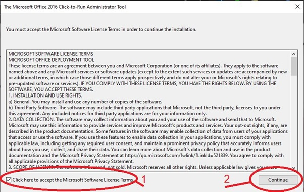
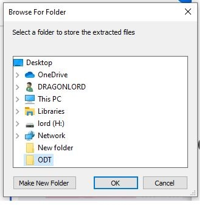
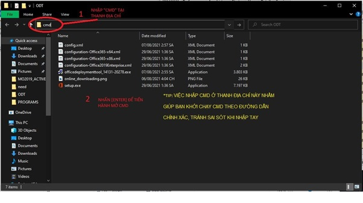
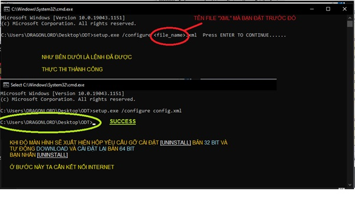
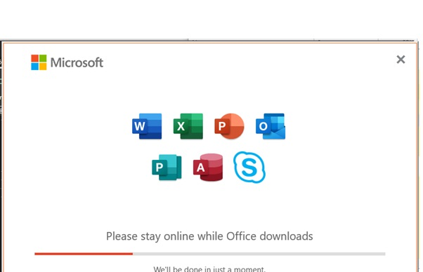
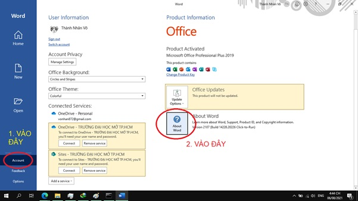
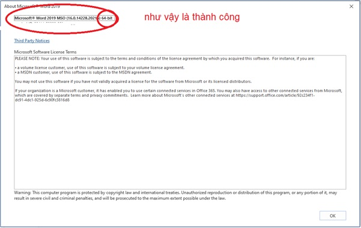

Lưu ý: Lưu phần mềm tại thư mục đã tạo ở Bước 0
-Hộp thoại như hình dưới, click vào ô chấp nhận vào nhấn [Continue]

-Hộp thoại chọn nơi cài đặt xuất hiện, các bạn dẫn tới địa chỉ thư mục đã tạo ở Bước 0

Ở đây tôi chọn file ODT và lưu tại desktop
Bước 3: Tạo file *.xml bằng Notepad và chép dòng code bên dưới vào và lưu lại sang đuôi *.xml *.txt sang *.xml
Hoặc có thể download luôn Download về máy
Nhớ file tạo hay download lưu tại thư mục Bước 0
Hình 1

Hình 2

Hộp thoại download xuất hiện, các bạn vui long chờ cho đến khi thông báo cài đặt hoàn tất [INSTALLED]

Mở 1 phần mềm bất kỳ của Microsoft Office như Word, Point, Accsess…
Làm như hình


Chúc các bạn thành công.
LƯU Ý: PHẢI ACCTIVE OFFFICE TRƯỚC KHI CHUYỂN ĐỔI
Q: Tôi không mua Microsoft Office, tôi sử dụng tool active thì có thể nâng lên bản 64Bit được không?
A: Được
Q: Cách này có thể áp dụng được cho Office 2013 hay 2016 chứ?
A: Được
Q: Tôi đang sài Office bản 32bit thì có cần nâng lên 64bit hay không?
A: Không cần thiết, chỉ những ai cần thiết mới nâng lên. Chẳng hạn như phần mềm AutoCAD Electrical cần Accsess bản 64bit mới có thể cài đặt được nó